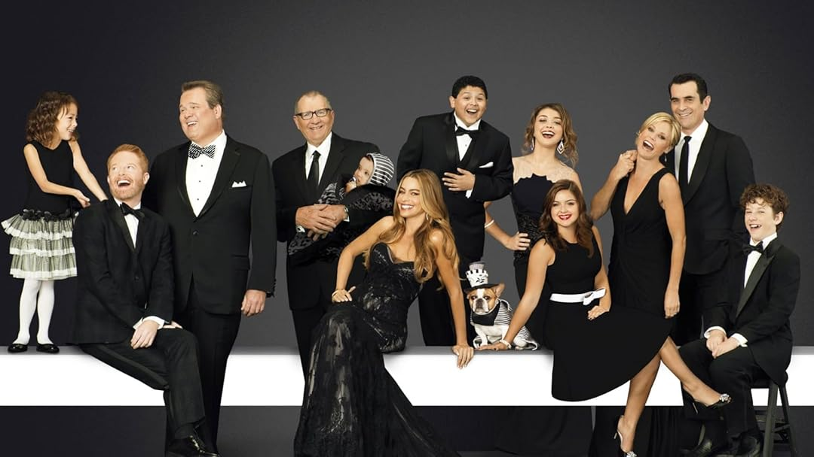

La mejor serie de comedia de la historia
Modern Family es una serie de televisión estadounidense en formato falso documental
que se estrenó en ABC el 23 de septiembre de 2009 y finalizó el 8 de abril de 2020. La serie sigue la
vida de Jay Pritchett y su familia, todos los cuales viven en Los Ángeles. La familia de Jay Pritchett
incluye a su segunda esposa y su hijastro, así como a sus dos hijos adultos; sus esposos e hijos y nietos.
Modern Family consta de once temporadas en total.
Lee más sobre Modern Family
Primera Temporada
La temporada recibió críticas mayoritariamente positivas, muchas de las cuales la calificaron como la
mejor serie de 2009. La serie fue un éxito en la audiencia y la primera temporada tuvo un promedio de 9,39
millones de espectadores en los 24 episodios.
Segunda temporada
Cam y Mitchell han adoptado a Lily, una bebé de origen asiático. Los padres primerizos deberán enfrentarse al duro
reto que supone, precisamente, la paternidad; especialmente en el colectivo homosexual, donde siempre se suele mirar todo
con mayor atención. A pesar de ser padres veteranos, Phil y Claire siguen teniendo dificultades; en este caso en su matrimonio.
La pareja intenta avivar su relación pese a tener tres hijos quiénes siguen suponiendo un reto para la misma. Jay, por su parte,
debe lidiar con las comparaciones entre las edades de Gloria y él mismo.
Tercera Temporada
Cam considera que debe comenzar a hacer ejercicio, por lo que pide ayuda a Mitchell. El abogado aprueba esta nueva idea de
su compañero y propone que hagan ejercicio juntos; lo que, sin duda, ayudará a mejorar el estado de la pareja.
Por otra parte, la casa de Jay recibe una nueva incorporación. Se trata de Stella, un perrito que el empresario decide
adoptar y que traerá de cabeza a Gloria, decidida a librarse de la presencia del canino para siempre. Por su parte,
Phil seguirá probando todo tipo de actos estrafalarios para mantener a su niño interior vivo.
Cuarta Temporada
La placentera vida de Jay es todo lo que el empresario podía desear. Subitamente, esta realidad cambia cuando Gloria
confiesa al mismo y a Manny que está embarazada. La temporada recorrerá todo el proceso que sigue Gloria durante el
embarazo y lo que supone para Manny y Jay, que comprobarán en lo que Gloria puede llegar a convertirse.
Haley, mientras tanto, parte hacia la Universidad; lo que hace que Phil y Claire se den cuenta de que la presencia de
sus hijos en el hogar no será eterna. La pareja decidirá emplear un esfuerzo extra en pasar más tiempo con sus dos hijos restantes.
Quinta Temporada
La legalización del matrimonio homosexual es ya un hecho en Estados Unidos. Este es el impulso definitivo para que Cam y Mitchel den
un paso adelante y se den el "sí, quiero". Durante toda la temporada, se podrá observar con detenimiento el camino de la pareja al altar
y todas las catástrofes que se producen por el camino. Mientras tanto, Gloria y Jay ya son padres del pequeño Joe. La pareja deberá
volver a enfrentarse al duro desafío de un bebé; algo que, sobre todo Jay, creían haber dejado atrás para siempre.

Sexta Temporada
Cam y Mitchell vuelven de su luna de miel y tienen que aclimatarse a la tan termida realidad conyugal. Juntos, descubrirán
por qué las parejas suelen temer lo que llaman "el síndrome post-matrimonial". Para Phil y Claire, experimentados en lo que significa
esa parte del matrimonio, tienen sus propias dificultades, tales como la irrupción de unos molestos vecinos, una desastrosa cena de
Acción de Gracias y la repentina decisión de Claire de espiar online. Además, un dron causa estragos en la casa de Jay y Gloria.
Manny y Luke decidirán derribarlo, pero no lo harán solos.
Septima Temporada
Hailey parece haber encontrado al hombre con el que consolidar una relación. Se trata de Andy. Sin embargo, las dudas van surgiendo
en el camino y la pareja deberá comprobar si están hechos el uno para el otro. Perfectamente consciente de lo que ocurre pero, aún así,
tocando a su propio compás, Phil decide adoptar un trío de patitos abandonados, lo que hará que Luke y Alex tomen cartas en el asunto.
Por su parte, Cam y Mitchell deberán enfrentarse, por primera vez, a los problemas económicos; y Jay y Gloria decidirán ocuparse
personalmente de la educación preescolar de Joe.
Octava Temporada
Esta temporada de Modern Family cuenta con todo tipo de celebraciones. En primer lugar, Manny; Joe; Gloria y Jay deberán acudir a
la boda de un familiar de Gloria. El enlace se celebra siguiendo la tradición mexicana, algo que saca de sus casillas a Jay.
También contará con un funeral; al que Mitchell; Cam y Lily acudirán, provocando consecuencias catastróficas, aunque llenas
de carcajadas. Por último, la familia percibirá lo que ellos consideran que es un escándalo, cuando unas fotos reveladoras de
Claire salgan a la luz.
Novena Tempora
Sinopsis
Manny ha comenzado su etapa universitaria. El joven desea seguir su sueño de convertirse en director de teatro. Sin embargo,
por primera vez, tiene dudas acerca de seguir su vocación o dejarse arrastrar por lo que piensan que no puede conseguirlo.
Esta temporada será también muy activa para Phil; que vivirá sucesos como acudir a la Comic-Con para conocer lo referente
a su serie favorita o incluso vender la casa de uno de los mayores ídolos del mismo. Mientras tanto, Haley sopesa si dejar
a Andy ha sido la mejor decisión que podía tomar.
Decima Temporada
En la décima temporada de Modern Family, los Pritchett-Dunphy-Tucker enfrentan nuevos desafíos y cambios importantes en
sus vidas. Phil y Claire lidian con la independencia de sus hijos, mientras que Haley experimenta un gran giro en su vida
amorosa y personal. Mitch y Cam continúan navegando su vida familiar con Lily, y Jay y Gloria se adaptan a los cambios que
vienen con la edad. La temporada culmina con una sorpresa que trae aún más cambios a la dinámica familiar: el embarazo
inesperado de Haley.
Onceava Temporada
La última temporada de Modern Family muestra a la familia afrontando nuevos retos mientras se preparan para despedirse
de los años que han pasado juntos. Haley y Dylan ahora son padres, lo que trae una nueva dinámica a la casa Dunphy. Phil
y Claire reflexionan sobre el futuro de sus hijos, mientras que Mitch y Cam consideran hacer un cambio drástico en sus
vidas. Jay se enfrenta al envejecimiento, y Gloria explora nuevas oportunidades en su carrera. La temporada cierra con
un emotivo final que refleja el crecimiento y el cambio de cada miembro de la familia.
Informacion adicional
| Temporadas |
Género |
País de Origen |
| 11 |
Comedia |
Estados Unidos |
Personajes Principales
- Jay Pritchett
- Gloria Delgado-Pritchett
- Claire Dunphy
- Phil Dunphy
- Mitchell Pritchett
- Cameron Tucker
- Haley Dunphy
- Alex Dunphy
- Lucas Dunphy
- Manny Delgado
- Lily Tucker Pritchett
- Joe Pritchett
- Dylan Marshall